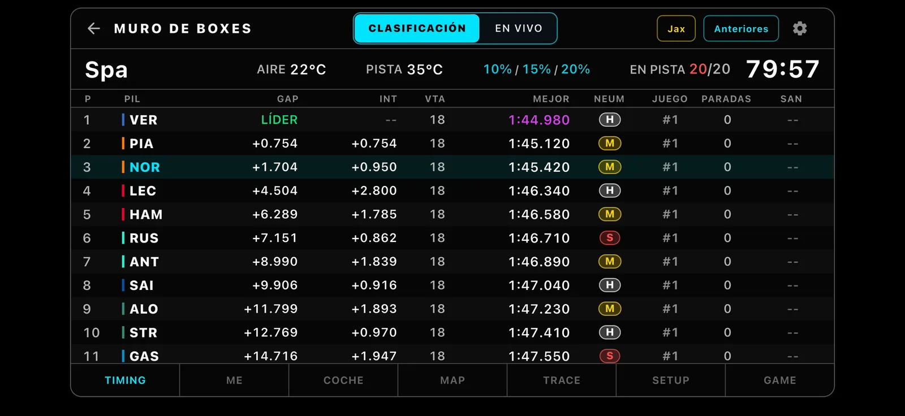
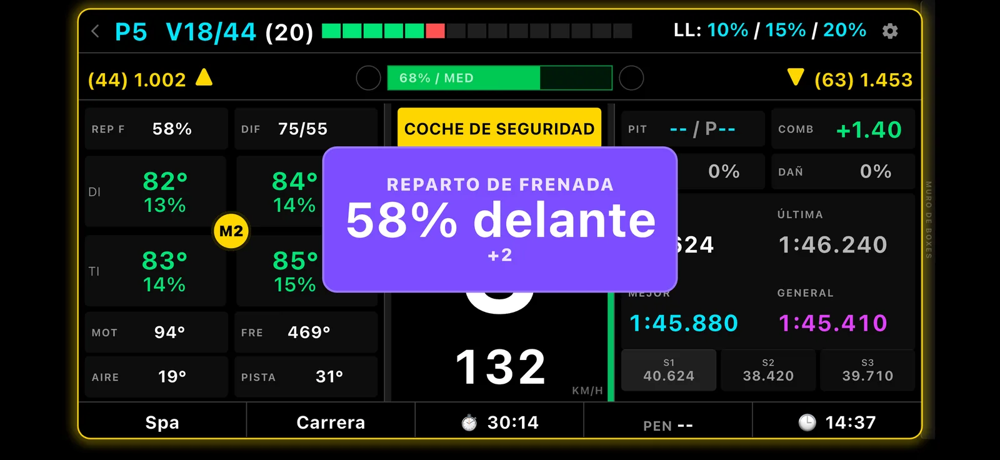
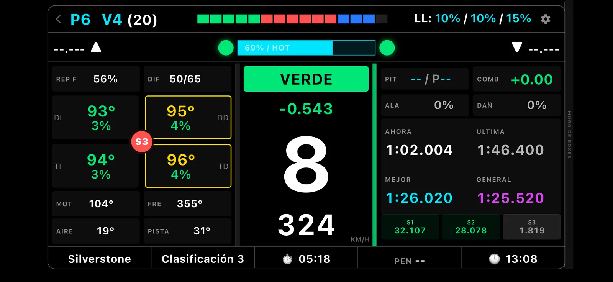

Cómo funciona
El panel en vivo
Lee el panel de un vistazo, abre la traza en vivo a pantalla completa con un toque y pasa al muro de boxes desde la barra de la derecha.
Tu carrera de un vistazo
Abre el Panel desde la pantalla de inicio. Gira a horizontal y espera la telemetría de tu juego; se completa en cuanto llegan los paquetes.
Todo lo que necesitas al volante está en una sola pantalla, sin desplazarte ni abrir menús.
- Barra superior: tu posición, el contador de vueltas con el número de coches que siguen en carrera entre paréntesis, las luces de cambio y la previsión de lluvia a 5, 15 y 30 minutos.
- Segunda fila: la diferencia con el coche de delante y el de detrás, y entre ambas el nivel y el modo de tu batería (ERS). Las diferencias se ocultan en la primera vuelta para no confundirte.
- Izquierda: reparto de frenada, diferencial, los cuatro neumáticos (temperatura y desgaste, con el compuesto en el centro) y las temperaturas de motor, frenos, aire y pista.
- Centro: la bandera, tu delta en vivo, la marcha y la velocidad.
- Derecha: ventana de parada y combustible, alerón y daños, los tiempos NOW, LAST, BEST y OVERALL y tus tres sectores.
- Barra inferior: circuito, sesión, reloj de sesión, penalizaciones y la hora.
Los colores de los sectores
Cada sector se juzga por separado en cuanto lo completas.
- Morado: el sector más rápido de la sesión, de cualquier piloto.
- Verde: tu mejor sector.
- Amarillo: completado, pero más lento que tu mejor.
- Gris: en curso, o aún sin nada con qué comparar.
Un toque para la traza en vivo a pantalla completa
Toca el centro del panel (la columna de la bandera, el delta, la marcha y la velocidad) para abrir la traza en vivo a pantalla completa. Dibuja tu acelerador, tu freno y tu volante mientras conduces.
Toca en cualquier punto de la traza para cerrarla y volver al panel. El volante sigue la convención de la app: una curva a la izquierda sube la línea y una a la derecha la baja.
Toca la barra de la derecha para el muro de boxes
Una barra fina, MURO DE BOXES, recorre el borde derecho del panel. Tócala y el muro de boxes se desliza sobre el panel, con la misma sesión en vivo.
Para volver, toca la barra PANEL en el borde izquierdo del muro de boxes, o su flecha atrás. En ambos sentidos es un toque: no hay ningún deslizamiento que puedas activar sin querer.
En libres y clasificación, el muro de boxes también se abre solo mientras tu coche está en su box.

Abreviaturas y ajustes
Toca la previsión de lluvia en la barra superior para abrir la leyenda del panel, que explica cada abreviatura (BB, DIFF, PEN, SC, VSC, ERS y más). La misma Guía del panel está en Ajustes → SOPORTE.
El engranaje de arriba a la derecha abre Ajustes sin salir de la sesión: la telemetría, la grabación y Jax siguen funcionando mientras cambias algo.
Dirección de carrera: el marco iluminado
Cuando interviene la dirección de carrera, el propio marco del panel cambia de color, para que leas la situación con el rabillo del ojo. El marco del muro de boxes hace lo mismo.
- Amarillo, pulsante: coche de seguridad virtual.
- Amarillo, fijo: coche de seguridad. Vuelve a pulsar cuando el coche de seguridad entra esta vuelta.
- Rojo: bandera roja. Tiene prioridad sobre todo lo demás.
- Azul: te muestran la bandera azul. Tras un coche de seguridad, el azul solo vuelve si la bandera sigue mostrándose.
- Sin brillo: carrera con bandera verde.
Con la opción Reducir movimiento de iOS activada, el brillo queda fijo en lugar de pulsar.
Un solo aviso para la dirección de carrera
Cada mensaje de dirección de carrera aparece en el mismo aviso, en el mismo lugar, en pocas palabras: BANDERA ROJA, DELTA SC, ALCANZA LA FILA, SC ENTRA ESTA VUELTA, VSC · MANTÉN EL DELTA, FIN DEL VSC, BANDERA VERDE y BANDERA AZUL.
Con coche de seguridad o VSC, el aviso del delta muestra tu margen respecto al delta exigido y cambia de color con él: verde para OK, amarillo para CUIDADO, rojo para REDUCE.
Reparto de frenada y diferencial
Cuando cambias el reparto de frenada, el diferencial (acelerando o sin acelerar) o el freno motor desde el volante, el nuevo valor aparece en un aviso índigo con el tamaño del cambio, por ejemplo «58 % delante, +2». El índigo no significa nada más en JMD, así que un cambio de reglaje nunca se confunde con la dirección de carrera.
Con coche de seguridad o VSC, el aviso del reglaje cubre el de dirección de carrera durante 2 segundos como máximo y después este vuelve. Varios cambios seguidos muestran un solo aviso con el valor más reciente. Los cambios hechos en el garaje o en el pit lane no se muestran.

Clasificación y libres
La misma distribución sirve en todos los tipos de sesión. En clasificación, los tiempos por vuelta y los colores de sector pasan a ser el centro de la pantalla.

Gratis y Jax Pro
Todo lo que describe esta guía es gratis. No necesitas suscripción.